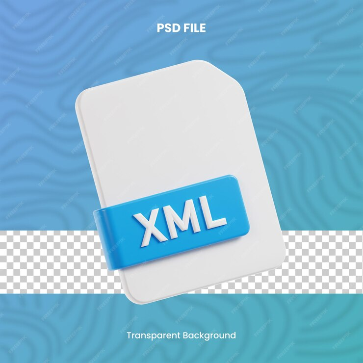

Технологии за WEB разработка

HTML
HTML е основният маркиращ език за описание и дизайн на уеб страници.

AJAX
AJAX позволява уеб страниците да се актуализират асинхронно чрез обмен на данни с уеб сървър.

XML
XML е език за маркиране и файлов формат за съхраняване, предаване и възстановяване на данни.

HTTP
HTTP е мрежов протокол за пренос на хипертекст от приложния слой на OSI модела.
Дизайн w3.css